Pasos para crear un informe
Los pasos para crear un nuevo informe en Bingo Análisis son los siguientes:
- Crear el nuevo informe
- Dividir los paneles
- Crear las consultas
- Crear las dependencias
- Personalizar la presentación de los datos
En los siguientes apartados se describe con más detalle este proceso.
Preparación previa
Antes de crear el informe conviene conocer la estructura del catálogo que utilizaremos. El catálogo incluye todas las dimensiones e indicadores que tendremos disponibles y podremos utilizar. Por ese motivo, antes de empezar, es recomendable repasar el contenido de las diferentes carpetas del catálogo:
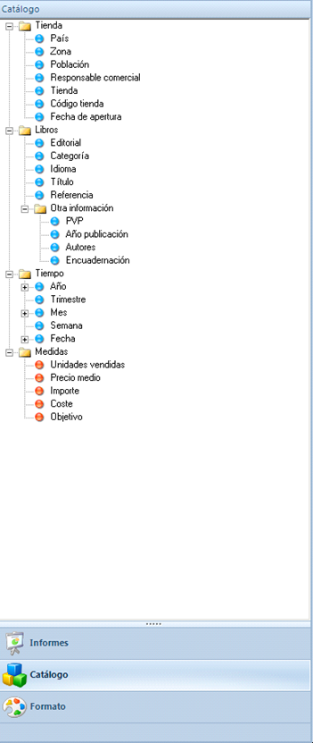
Para empezar el informe, lo primero que debemos hacer es crear un informe en blanco. Para ello, debemos realizar los siguientes pasos:
- Abrir la aplicación donde queremos crear el informe
- Hacemos clic en el botón “Informes”, y nos aparecerán los informes ya creados organizados por carpetas. Si la aplicación no tiene todavía ningún informe, el panel aparecerá completamente vacío.
- Abrimos el menú contextual (clic-derecho) de la carpeta donde queremos crear el nuevo informe, y seleccionamos la opción “Nuevo informe”. Aparecerá la ventana de propiedades del informe.
- Establecemos el nombre del nuevo informe, y hacemos clic en el botón “Aceptar”.
En la pantalla principal se abrirá el nuevo informe. Inicialmente, el informe consistirá en un único panel en blanco.
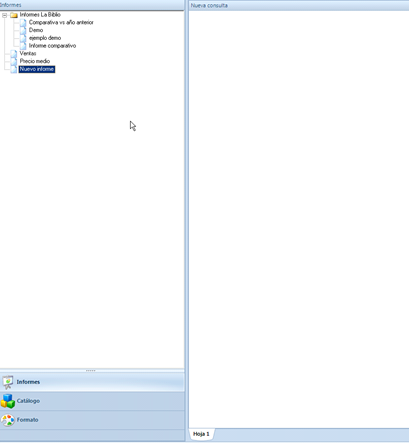
Dividir informe en paneles
Los informes de Bingo consisten en una serie de paneles de información interrelacionados.
Inicialmente, el informe tiene un único panel en blanco. Podemos añadir nuevos paneles arriba, abajo, a la izquierda o a la derecha. Para ello, debemos abrir el menú contextual (clic-derecho) del panel y seleccionar una de estas opciones:
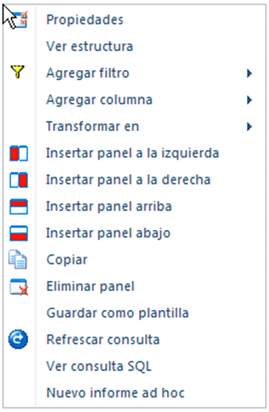
Si añadimos un panel abajo, el informe tendrá esta estructura:
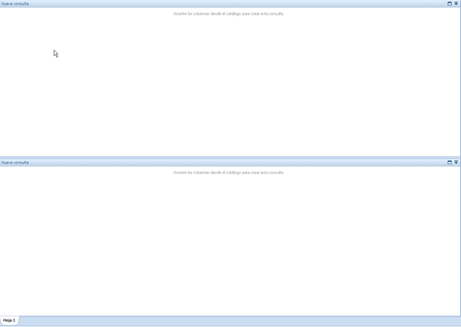
Podemos ir añadiendo nuevos paneles de manera sucesiva, arriba, abajo, a la izquierda, o a la derecha, hasta conseguir la estructura que necesitamos para nuestro informe.
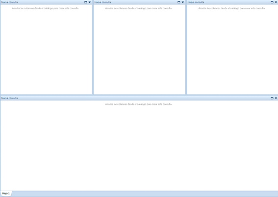
En caso de error, o si queremos modificar la estructura del informe, siempre podemos eliminar los paneles que no sean necesarios. Para ello, debemos seleccionar la opción “Eliminar panel” del menú contextual (clic-derecho). También, podemos añadir nuevos paneles en cualquier momento siguiendo el procedimiento descrito.
También podemos reordenar los paneles arrastrándolos desde el título.
Construir consultas
Una vez tenemos el informe con la estructura correcta, ya podemos empezar a añadir datos al informe.
Cada panel contendrá una consulta, con sus columnas de dimensiones e indicadores, con filtros si en necesario, y con una ordenación determinada.
Para añadir información a un panel, debemos arrastrar las columnas desde el panel lateral de navegación hasta el panel. Se deben ir arrastrando sucesivamente las columnas.
Por ejemplo, si en el primer panel arrastraramos las columnas “País” y “Ventas”, el informé mostrará esta información:
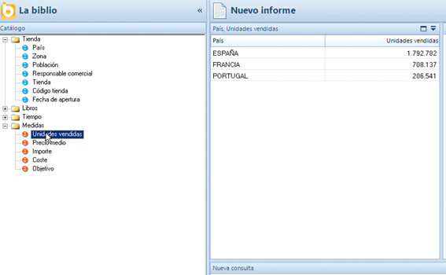
Si queremos aplicar un filtro, debemos arrastrar el elemento que queremos filtrar desde el panel de navegación hasta el título del panel (en la parte superior del mismo). El título del panel cambiará de color, tal como muestra la imagen:
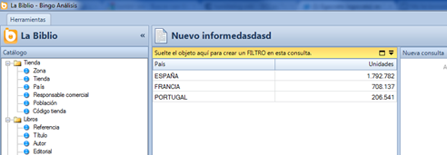
Entonces, aparecerá la ventana de propiedades del filtro, y podremos seleccionar los elementos que queremos seleccionar, entre otras opciones.
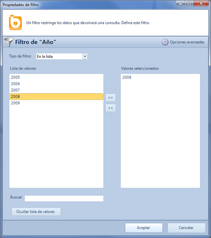
También se pueden añadir columnas o filtros desde el menú contextual del panel. Para ver las opciones, se debe hacer clic con el botón derecho del ratón sobre el título del panel:
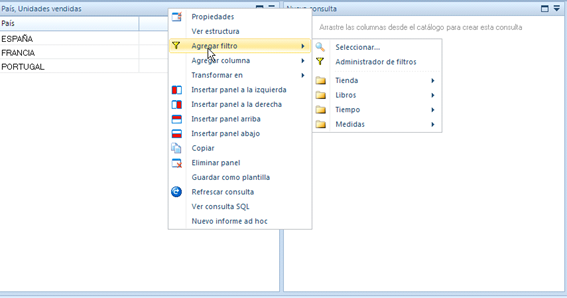
De cualquiera de las formas podemos ir creando las distintas consultas del informe hasta conseguir mostrar toda la información que queremos incluir:
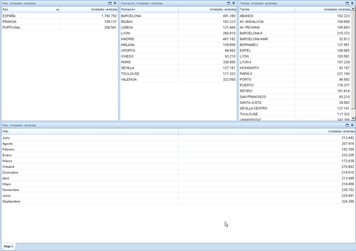
/En este
En este momento el informe ya mostrará toda la información deseada. Sin embargo, las consultas son independientes, y al seleccionar un elemento en un panel no afecta a la información visualizada en el resto de paneles. Para crear un verdadero informe dinámico, debemos crear las dependencias.
Crear dependencias
Las “dependencias” son las relaciones existentes entre los distintos paneles y permiten la generación de informes dinámicos y navegables. Al seleccionar un dato en un panel, la selección se arrastra automáticamente a los paneles relacionados, y se filtra la información mostrada.

Para crear las dependencias debemos seguir los siguientes pasos:
- En la barra de botones superior, hacemos clic en el botón “Ver dependencias”.
- Arrastramos el ratón, manteniendo el botón derecho presionado, desde el panel principal al panel secundario. De este modo, al seleccionar un registro del panel principal, la información se filtrará en el panel secundario.
- Repetimos el paso 2 sucesivamente y vamos creando todas las dependencias que necesitamos.
- En la barra de botones superior, desmarcamos el botón “Ver dependencias” para volver al modo de presentación normal del informe. Desaparecerán las flechas que indican las dependencias existentes entre los paneles.
Recuerda, es necesario arrastrar con el botón derecho:
De este modo, podemos crear todas las dependencias necesarias en nuestro informe. Ahora, al seleccionar un elemento de cualquier panel, la información de los paneles dependientes de actualizará automáticamente.
Personalizar apariencia
Por defecto, todos los paneles muestras información en formato tabular y con un formato sobrio (letras negras sobre fondo blanco).
Podemos personalizar la apariencia de cada consulta (o de alguna columna en particular). También podemos convertir las tablas en diferentes tipos de gráficos, y configurar la apariencia de los gráficos.
Para convertir una tabla en gráfico, debemos seleccionar la opción correspondiente al tipo de gráfico deseado en el menú contextual del panel (clic-derecho sobre el título del panel).
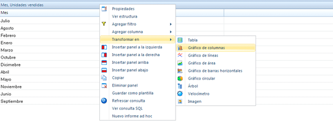
Al seleccionar alguna opción, la tabla se convertirá en un gráfico:
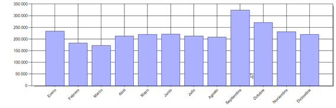
Desde el panel de navegación de formato también podemos cambiar el formato de los gráficos y de las tablas (tipo de fuente, colores, tamaños, etc.)
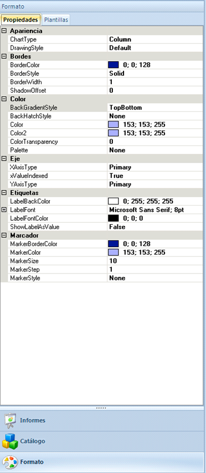
Siguientes pasos
En este apartado se han descrito los pasos principales para la construcción de un sencillo informe dinámico.
El informe generado se puede completar con más características adicionales que ofrece Bingo Análisis para la creación de informes dinámicos. Por ejemplo, se pueden añadir nuevas hojas al informe, crear filtros dinámicos, añadir alertas semafóricas, fórmulas y otras funcionalidades interesantes.
En los siguientes apartados se describen con mayor detalle todas las características de Bingo Análisis, y se muestra con ejemplos prácticos como utilizarlas para conseguir potentes e impactantes informes.
Vídeo de demostración
El siguiente vídeo muestra la construcción de un informe parecido al descrito en este artículo. Se trata de un vídeo un poco antiguo (del año 2010) pero el procedimiento descrito siguie siendo válido: